Week 6 随堂 Vibe 实验
篇章分析与指代消解系统
本项目使用 Python + Streamlit + spaCy + requests + fastcoref
实现了一个面向课程作业的综合性交互式 Web 系统，用于展示话语分割、浅层篇章关系提取与指代消解三类核心任务。
EDU Segmentation
PDTB Explicit Relation
Coreference Resolution
Streamlit
模块 1：话语分割
对比规则基线与 NeuralEDUSeg 真实样本，观察 EDU 边界预测与真实标注之间的差异。
模块 2：浅层篇章关系
识别显式连接词，标注 PDTB 顶级语义类别，并对 Arg1 / Arg2 做简化抽取与展示。
模块 3：指代消解
使用 coreference clusters 对文本中的 mentions 进行高亮聚类，直观展示实体等价类。
实验设计与实现要点
- 模块 1 采用“规则基线 vs 数据集真实标注”的双栏对比形式，便于观察简单规则方法与真实 EDU 切分之间的偏差。
- 模块 2 以显式连接词为中心，构建了一个简化版 PDTB 风格关系分析器，支持连接词识别、类别映射与论据切分。
- 模块 3 优先调用 fastcoref 执行真实模型推理，并在依赖不可用时提供启发式降级方案，保证系统可运行。
- 系统对网络请求失败、模型缺失、依赖初始化失败等情况进行了异常处理与提示，提升了课程展示场景下的稳定性。
运行截图
以下截图展示了系统页面的实际运行效果，可用于作业提交中的网页成果展示。
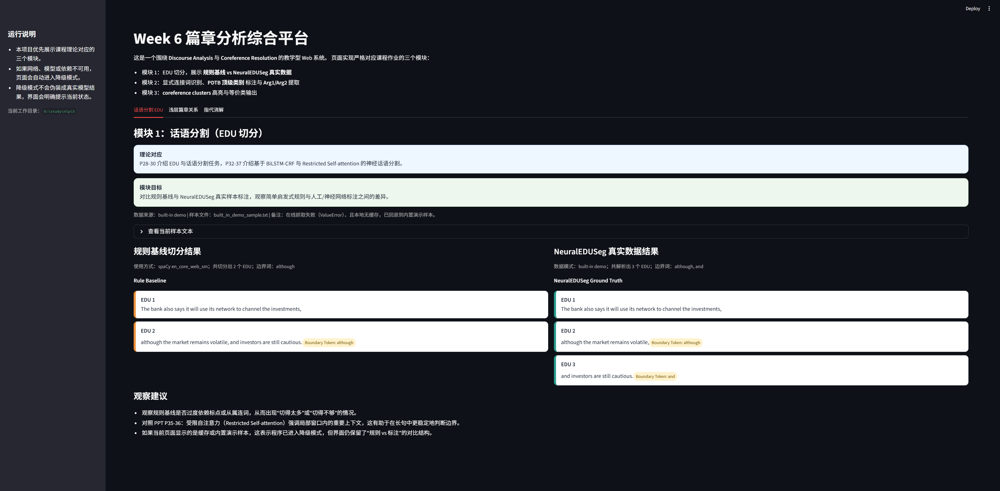
截图 1：系统首页与模块 1 页面
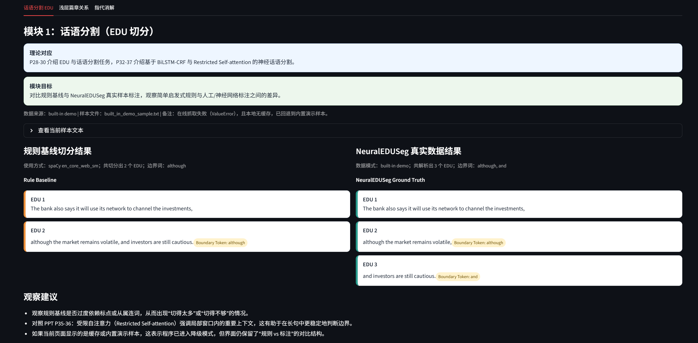
截图 2：模块运行效果
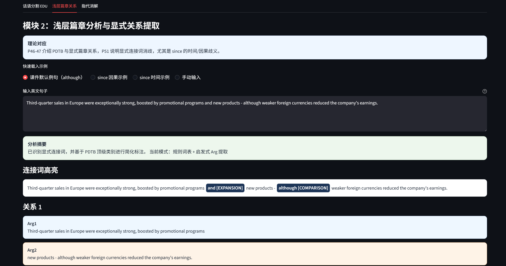
截图 3：模块运行效果
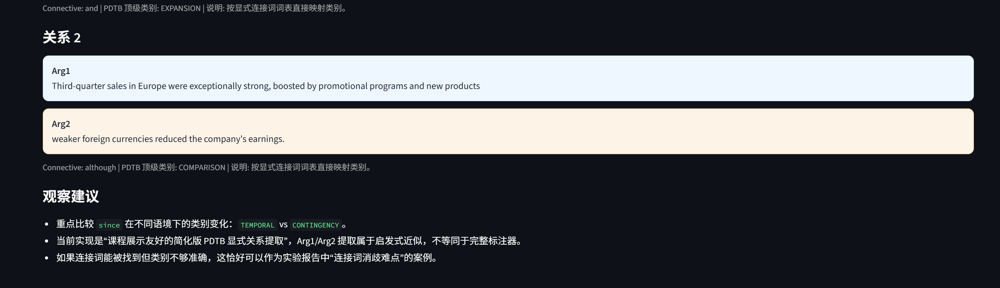
截图 4：模块运行效果
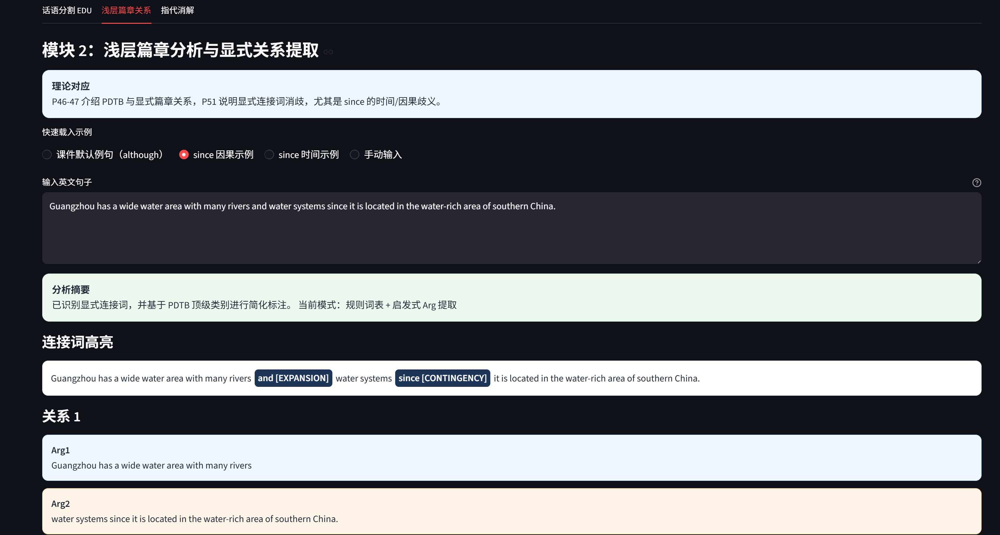
截图 5：模块运行效果
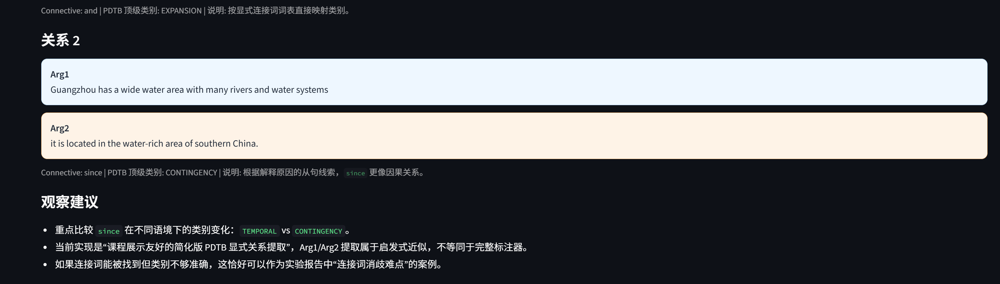
截图 6：模块运行效果
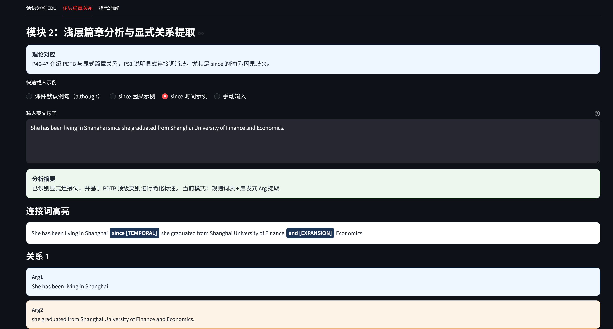
截图 7：模块运行效果
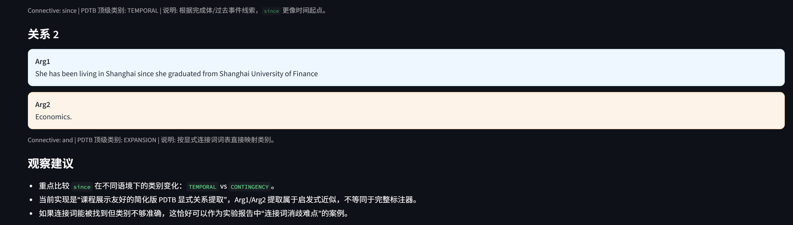
截图 8：模块运行效果
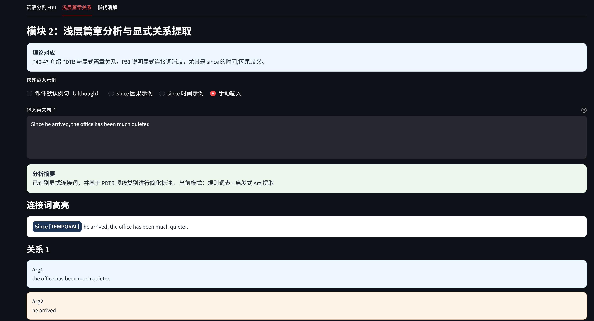
截图 9：模块运行效果
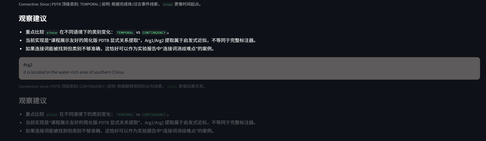
截图 10：模块运行效果
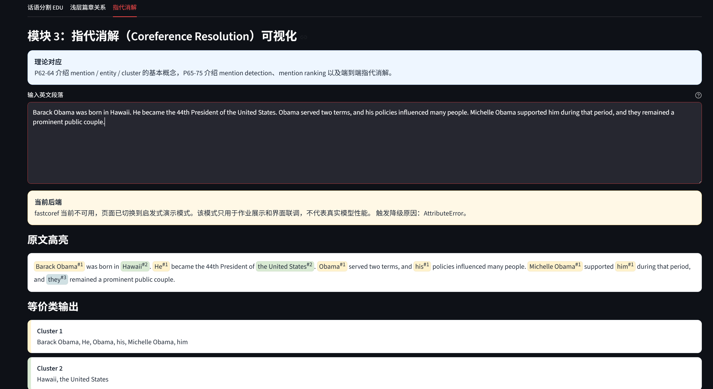
截图 11：模块运行效果
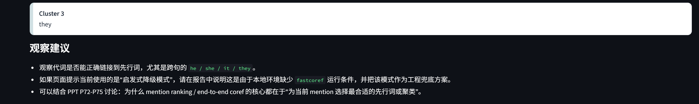
截图 12：模块运行效果
实验结论
- 话语分割实验表明，基于标点和连接词的规则基线可以捕捉一部分明显的 EDU 边界，但面对复杂从句、长距离依赖和嵌套结构时，容易出现过切或漏切。
- 浅层篇章关系实验表明，显式连接词可以有效触发篇章关系识别，但连接词本身存在语义歧义，例如
since 既可能表示时间关系，也可能表示因果关系，说明显式连接词消歧是实际工程中的关键难点。
- 指代消解实验表明，现代神经模型能够较好地处理跨句回指和实体聚类问题，但复杂代词、多实体竞争和上下文不足时仍可能出现错误链接。
- 整体来看，本实验成功将课程中的 EDU、PDTB 显式关系和 Coreference Resolution 理论转化为可交互、可观察的系统功能，验证了课堂理论与工程实现之间的对应关系。